|
|
Manual del usuario de la cámara de rastreo iZEEKER iG200
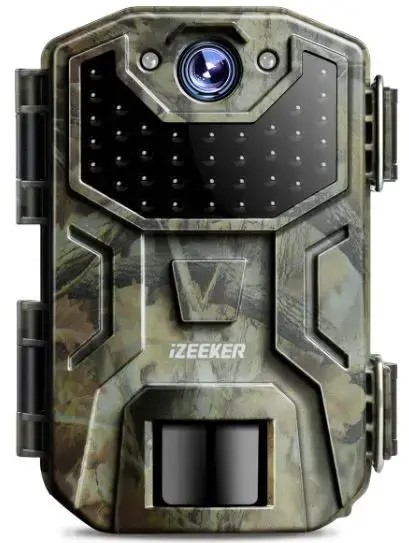 3.- Instalación de las baterías.- 4.- Fuente alimentación externa.- 5.- Tarjeta SD.- Insertar y formatear.- 7.- Modo de fotografía manual.- 9.- Configuraciones del menú.- 10.- Montaje y posicionamiento de la cámara.- 11.- Prueba de detección de ángulo y distancia.- 13.- Modo de visualizar archivos.- 14.- Conexión de la cámara a un ordenador.- -------------------------------------------------------------------------------------------------------------------------------------- 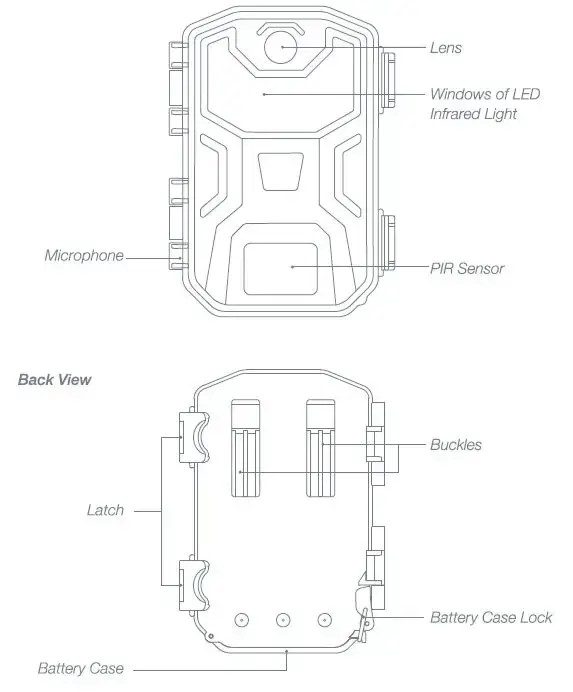
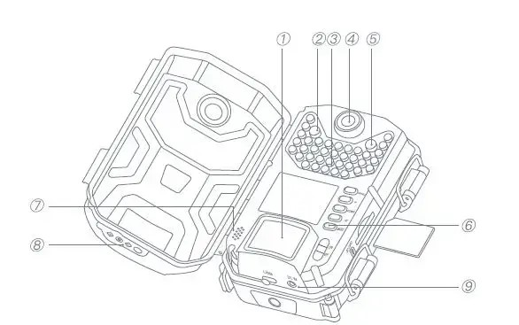
1.- Sensor PIR 2.- Sensor de luz 3.- Luz infrarroja LED 4.- Lente 5.- Indicador del sensor PIR 6.- Botón de modo 7.- Speaker 8.- Cubierta del enchufe de entrada de CC 9.- Puerto DC-IN
3.- Instalación de las baterías.- Instalación de las baterías y la tarjeta SD. Antes de comenzar a aprender a usar su cámara iZEEKER Trail, primero deberá instalar un juego de baterías e insertar una tarjeta SD.- 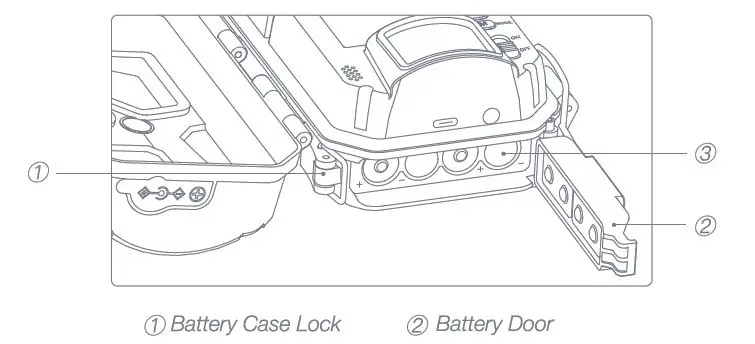
Inserte la batería en la dirección que se muestra en la foto. Después de abrir el bloqueo de la caja de la batería en la parte inferior izquierda de la cámara, verá que la cámara tiene ocho ranuras para la batería. Instale 8 pilas de 1.5 V. Asegúrese de insertar cada batería con la polaridad correcta. PRECAUCIONES: iZEEKER recomienda utilizar un juego completo de ocho pilas o baterías nuevas de 1.5 VM Uthium o alcalinas M de alta calidad en todos los modelos de cámaras de rastreo iZEEKER para obtener la máxima duración de la batería, ya que el voltage puede causar problemas operativos. No mezcle pilas viejas y nuevas. No mezcle tipos de baterías: use TODAS de litio o TODAS alcalinas.
4.- Fuente de alimentación externa 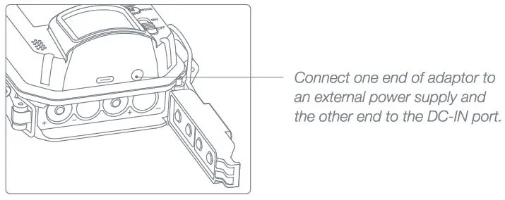 La cámara también se puede operar usando energía de una fuente de alimentación externa; conecte la fuente de alimentación externa al conector "DC-IN" en la parte inferior de la cámara de rastreo iZEEKER. Salida de fuente de alimentación externa: 6V / 2A Tamaño del enchufe DC-IN: 3.5mm x1.35mm
5.- Tarjeta SD.- Insertar y formatear.- 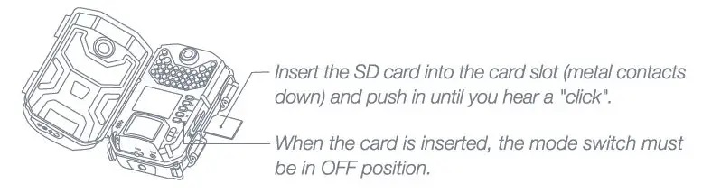
Nota: Inserte una tarjeta SD Clase 6 o superior de hasta 32 GB. Formatee la nueva tarjeta SD antes de usar la cámara.
Operación del producto: Modo APAGADO/ENCENDIDO Cambie el "interruptor de modo" para elegir el estado de trabajo.- 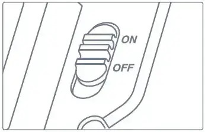
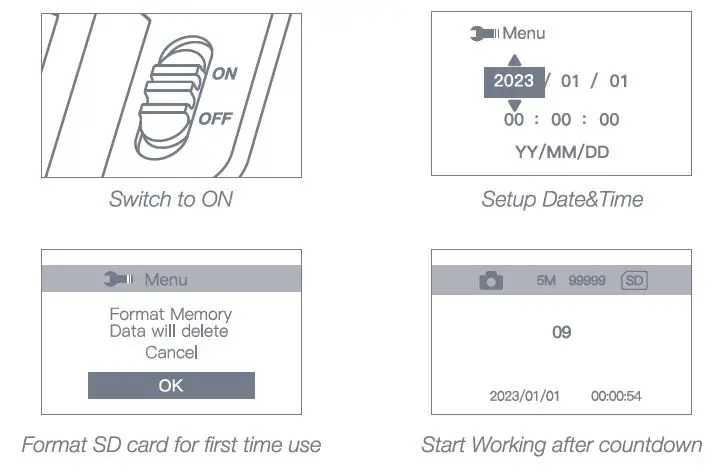
Modo apagado OFF: - La cámara está completamente apagada. Sólo en modo APAGADO deberá insertar o retirar la tarjeta de memoria o reemplazar las baterías. En modo encendodo ON: - Cuando se cambia de APAGADO a ENCENDIDO, la visualización en pantalla pasará al estado previo view modo. - Puede grabar vídeo manualmente, tomar fotos, reproducir lo grabado files o cambiar la configuración. - En el preview modo, el sensor PIR está encendido. Cuando se activan, el indicador luminoso parpadeará, pero la cámara no tomará fotografías ni grabará vídeos automáticamente. - Si no se realiza ninguna operación, entrará automáticamente en modo de trabajo. Habrá un tiempo de retraso y la pantalla tendrá una cuenta regresiva de 15 segundos, luego quedará en blanco y la operación del botón se desactivará. - Al detectar animales u otros objetos en movimiento, la cámara tomará fotografías o grabará videos cuando se active el sensor PIR y luego volverá al modo de espera.
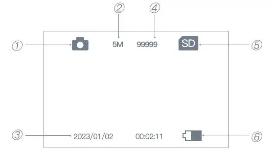
1.- Modo de foto fija 2.- Resolución de la foto 3.- Fecha y hora 4.- Capacidad restante de fotografías 5.- Estado de la tarjeta SD 6.- Nivel de bateria
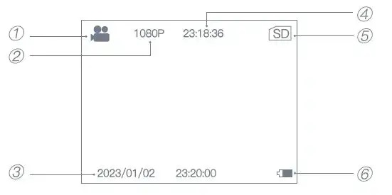
1.- Modo de foto fija 2.- Resolución de la foto 3.- Fecha y hora 4.- Duración restante del vídeo 5.- Estado de SD 6.- Nivel de batería
9.- Configuraciones del menú.- - Monitorear retraso Seleccione el tiempo de retraso cuando la cámara ingresa al modo de disparo automático. En el modo ON, la cámara entrará automáticamente en el modo de disparo automático después del tiempo de retardo establecido si no realiza ninguna operación.
- Configuración de modo Selecciona si se capturan fotografías o videos, cuando se activa la cámara. El modo Foto y vídeo combina Foto y Vídeo, por lo que se capturan una fotografía y un vídeo para cada disparador.
- Pixel de la foto Selecciona la resolución para fotos fijas. Una resolución más alta proporciona más píxeles, pero crea fotos que ocupan más capacidad de la tarjeta SD (se llenan más rápido).
- Secuencia Selecciona cuántas fotos se toman por disparador en el modo Foto.
- Resolución de vídeo Selecciona la resolución de vídeo. Una resolución más alta produce videos de mejor calidad, pero crea videos más grandes. Archivos que ocupan más capacidad de la tarjeta SD (se llenan más rápido). Se recomienda el uso de tarjetas SD de alta velocidad (SanDisk® SDHC clase 6 o superior) si desea configuraciones de video más altas.
- Longitud de grabación Especifique la duración de una grabación de video cuando la cámara se activa automáticamente. El período de grabación de videos no está limitado en el modo TEST. Para prolongar la vida útil de la cámara, recomendamos establecer una duración de vídeo más corta.
- Intervalo de operación Seleccione el período de tiempo que la cámara "esperará" hasta que responda a cualquier disparador adicional del PIR después de que se detecte por primera vez un animal y permanezca dentro del alcance del sensor. Durante este intervalo de “ignorar activadores” establecido por el usuario, la cámara no capturará fotos ni videos. Esto evita que la tarjeta se llene con demasiadas imágenes redundantes. PRECAUCIONES: El intervalo PIR tiene una gran influencia en el tiempo de funcionamiento de la batería. Cuanto más corto sea el intervalo, la alta frecuencia para capturar el objetivo, pero más consumo de energía; Cuanto más largo sea el intervalo, menor será la frecuencia para capturar el objetivo y menor el consumo de energía.
- Minutero Configure el tiempo en “ON” si la cámara solo debe estar activa dentro de un tiempo determinado. Una vez confirmado el “encendido” con la tecla OK, se puede configurar la hora de inicio y finalización. Si la hora de inicio es, por ejemplo, las 15:30 y la hora de finalización es las 7:30, la cámara estará operativa desde las 3:30 del día actual hasta las 7:30 del día siguiente. La cámara no se activará y no tomará ninguna fotografía cuando el tiempo no esté incluido en este período.
- Lapso de tiempo Activa o desactiva el modo de grabación Time Lapse. Cuando se activa, esta función obliga a la cámara a tomar fotografías o videos incluso cuando no la activa un objetivo vivo cercano, lo que resulta útil para monitorear constantemente un área que podría estar lejos de la cámara. Esto también es útil para observar animales de sangre fría (p. ej. serpientes) o plantas de exterior, etc. Tan pronto como se haya confirmado el ajuste “on” presionando la tecla OK, podrá ingresar el intervalo de tiempo (15 segundos-30 minutos) después del cual se van a tomar fotos. Nota: En este modo, la función PIR dejaría de funcionar y la cámara tomaría fotos en el intervalo de tiempo establecido.
- Idioma Seleccione el idioma de menú deseado.
- Fecha y hora Configure el año, mes y fecha (según el formato de fecha que configuró), luego la hora (según el formato de fecha que configuró) y los minutos.
- Conjunto de ID de serie Permite al usuario configurar una numeración de cliente para la cámara. Útil para fines de identificación cuando se configuran varias cámaras, ya que cada cámara imprimirá una numeración en todas las fotos (pero no en los videos) que capture. Utilice las teclas ARRIBA/ABAJO (para cambiar la configuración) y las teclas OK (para pasar al siguiente campo) para configurar el código de dos dígitos.
- Pitido Seleccione “ON” para abrir el sonido del pitido, “OFP significa cerrar.
- Grabar audio Seleccione si graba audio mientras graba un video.
- Implementación Seleccione “Hora Stamp” I “Fecha” si desea que la fecha y hora o solo la fecha (en la que se capturó la imagen) se imprima en cada foto que grabe en video, seleccione “Desactivado” para no imprimir.
- Establecer contraseña Después de seleccionar "Activado", introduzca una contraseña de cuatro dígitos para proteger su cámara contra el acceso no autorizado. Utilice las teclas ARRIBA/ABAJO (para cambiar la configuración) y las teclas OK (para pasar al siguiente campo) para configurar el código de cuatro dígitos.
- Formato Elimina (borra) todos archivos. Se almacena en una tarjeta para prepararla para su reutilización. Formatee siempre una tarjeta que haya sido utilizada anteriormente en otros dispositivos o si es una tarjeta nueva. AVISO: Asegúrese de haber descargado y guardado todos los archivos ¡Si quieres conservarlos!
- Configuración predeterminada Seleccione Aceptar para restaurar todos los parámetros a la configuración predeterminada de fábrica original. Si la cámara se comporta de manera extraña y cree que puede haber cambiado la configuración de algo accidentalmente (pero no está seguro de cuál), esto restablecerá todos los parámetros a sus configuraciones más comúnmente utilizadas o “genéricas”.
- Versión Muestra la versión de firmware actual como referencia.
10.- Montaje y posicionamiento de la cámara Usando el Ajustable Web Cinturón: Empuje un extremo del cinturón a través de los dos soportes en la parte posterior de la cámara. Pase el extremo de la correa a través de la hebilla. Sujete el cinturón de forma segura alrededor del tronco del árbol tirando firmemente del extremo de la correa para que no quede flojo. 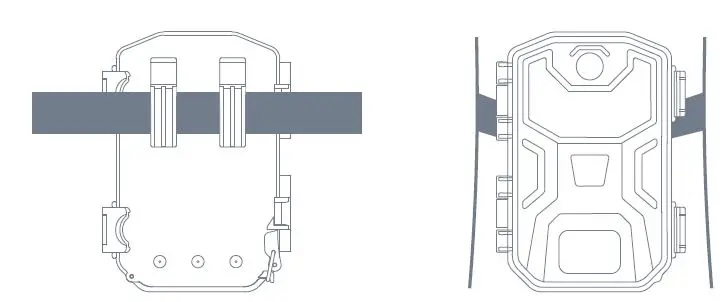
11.- Prueba de detección de ángulo y distancia Para probar si la cámara de rastreo iZEEKER puede monitorear efectivamente el área que elija, se recomienda esta prueba para verificar el ángulo de detección y la distancia de monitoreo de la cámara de rastreo iZEEKER. Para realizar la prueba:
13.- Modo de visualizar archivos Todas las fotos y vídeos tomados con la cámara de rastreo iZEEKER se pueden visualizar directamente en la pantalla incorporada, también se puede proteger, desproteger y eliminar directamente en la cámara. Visualizar archivos directamente en la cámara: Coloque el interruptor de encendido en la posición ON, presione la [tecla de modelo dos veces para ingresar al modo de reproducción.
14.- Conexión de la cámara a un ordenador
|
|---|
Andaluzsoy |